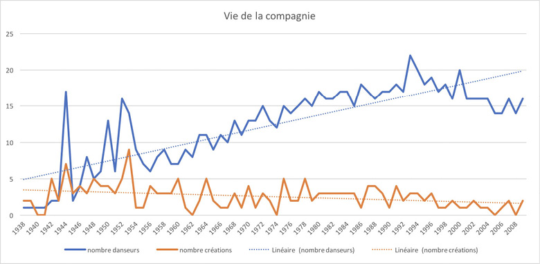

Université Polytechnique Hauts-de-France, laboratoire DeVisu, Campus Mont Houy - 59313 Valenciennes Cedex 9, Clarx isse.Bardiot[at]uphf.fr
Les travaux de Clarisse Bardiot portent sur l’analyse des traces numériques des arts de la scène à la croisée de l’historiographie, de la génétique des œuvres ainsi que de la documentation et de la préservation des spectacles.
fr

RÉSUMÉ
MOTS CLÉS
performing arts, Merce Cunningham, data, networks, theatre analytics
Les « theatre analytics » sont l’analyse des arts de la scène basée sur les données, qu’il s’agisse de l’histoire du théâtre, de l’étude des textes littéraires ou de la mise en scène. Je propose de présenter les perspectives offertes par une telle approche en présentant une étude de cas autour du chorégraphe Merce Cunningham, considéré comme l’un des plus grands chorégraphes du xxe siècle. à partir de données concernant les premières des 183 spectacles qu’il a créés tout au long de sa carrière, en utilisant différents instruments d’analyse quantitative et des visualisations, pouvons-nous identifier des traits typiques, des caractéristiques propres à l’histoire et la vie de la compagnie ainsi qu’à l’esthétique de Merce Cunningham ?
ABSTRACT
EN
KEYWORDS
performing arts, Merce Cunningham, data, networks, theatre analytics
Theatre analytics is the data-driven analysis of theatre, whether it concerns theatre history, drama or mise-en-scène. To understand what quantitative methodologies can bring to the knowledge of theatre, I propose a case study of Merce Cunningham, one of the most influential choreographers of the 20th century. From data concerning the premiere of the 183 choreographies he created throughout his career, using different quantitative analysis tools and datavisualizations, can we identify typical features, characteristics specific to the history and life of the Merce Cunningham Dance Company as well as the aesthetics of Merc Cunningham?
Ex turba vero imae sortis et paupertinae in tabernis aliqui pernoctant vinariis, non nulli velariis umbraculorum theatralium latent, quae Campanam imitatus lasciviam Catulus in aedilitate sua suspendit omnium primus; aut pugnaciter aleis certant turpi sono fragosis naribus introrsum reducto spiritu concrepantes; aut quod est studiorum omnium maximum ab ortu lucis ad vesperam sole fatiscunt vel pluviis, per minutias aurigarum equorumque praecipua vel delicta scrutantes.
Alii summum decus in carruchis solito altioribus et ambitioso vestium cultu ponentes sudant sub ponderibus lacernarum, quas in collis insertas cingulis ipsis adnectunt nimia subtegminum tenuitate perflabiles, expandentes eas crebris agitationibus maximeque sinistra, ut longiores fimbriae tunicaeque perspicue luceant varietate liciorum effigiatae in species animalium multiformes.
Et quoniam mirari posse quosdam peregrinos existimo haec lecturos forsitan, si contigerit, quamobrem cum oratio ad ea monstranda deflexerit quae Romae gererentur, nihil praeter seditiones narratur et tabernas et vilitates harum similis alias, summatim causas perstringam nusquam a veritate sponte propria digressurus.
Iamque lituis cladium concrepantibus internarum non celate ut antea turbidum saeviebat ingenium a veri consideratione detortum et nullo inpositorum vel conpositorum fidem sollemniter inquirente nec discernente a societate noxiorum insontes velut exturbatum e iudiciis fas omne discessit, et causarum legitima silente defensione carnifex rapinarum sequester et obductio capitum et bonorum ubique multatio versabatur per orientales provincias, quas recensere puto nunc oportunum absque Mesopotamia digesta, cum bella Parthica dicerentur, et Aegypto, quam necessario aliud reieci ad tempus.
Pandente itaque viam fatorum sorte tristissima, qua praestitutum erat eum vita et imperio spoliari, itineribus interiectis permutatione iumentorum emensis venit Petobionem oppidum Noricorum, ubi reseratae sunt insidiarum latebrae omnes, et Barbatio1 repente apparuit comes, qui sub eo domesticis praefuit, cum Apodemio agente in rebus milites ducens, quos beneficiis suis oppigneratos elegerat imperator certus nec praemiis nec miseratione ulla posse deflecti.
Montius nos tumore inusitato2 quodam et novo ut rebellis et maiestati recalcitrantes Augustae per haec quae strepit incusat iratus nimirum quod contumacem praefectum, quid rerum ordo postulat ignorare3 dissimulantem formidine tenus iusserim custodiri4.
« t » sinscrit dans un questionnement plus large sur les Theatre Analytics, soit lanalyse des arts de la scène basée sur les données (Bardiot 2017). Art par essence éphémère, sans objet pérenne, les arts de la scène ne subsistent que dans les souvenirs des spectateurs, dans les actualités culturelles ou encore dans les collections publiques ou privées sous forme de documents, darchives. Ces dernières sont extrêmement diverses : programmes, photographies, films, carnets de notes, correspondances, mais aussi costumes, fragments de scénographies, documents et matériels techniques, marionnettes… À la fragilité des spectacles soppose le patrimoine architectural et littéraire : le théâtre, lopéra, le cirque sont aussi des lieux structurant lurbanisme de nos villes ainsi que des écritures (le texte, la partition) qui ont pour vocation de perdurer par-delà les représentations, par-delà les écritures de plateau. Comme si la pérennité de la pierre et de la lettre devait compenser, pouvait conjurer, la fugacité de la représentation. Dans les traces qui nous restent des spectacles, quelles données pouvons-nous collecter et analyser afin den retracer l’histoire et den mener lanalyse esthétique ? Autrement dit, quelles sont les données des arts de la scène ? Ou encore : comment la transformation des traces en données permet-elle de renouveler lanalyse historique et esthétique des arts de la scène ?
Italique : les arts de la scène
Bold : les arts de la scène
Petites capitales et exposant : xvie siècle
Lien hypertext : http://www.humanisti.ca/
Chiffres : 0123456789
Chiffres (variante 1) : 0123456789
Chiffres (variante 2) : 0123456789
Fractions : 1/3
Grec polytonique : Ἀθήναιος μὲν ὁ τῆς βίβλου πατήρ· βίβλου πατήρ.
Cyrillique : Около 863 года братья Константин (Кирилл) Философ и Мефодий.
Caractères spéciaux :
espace fine : « parenthèses »
espace insécable : deux-point :
Citation :
Longtemps, je me suis couché de bonne heure. Parfois, à peine ma bougie éteinte, mes yeux se fermaient si vite que je navais pas le temps de me dire : « Je mendors. »
Et, une demi-heure après, la pensée qu’il était temps de chercher le sommeil méveillait ; je voulais poser le volume que je croyais avoir encore dans les mains et souffler ma lumière ; je navais pas cessé en dormant de faire des réflexions sur ce que je venais de lire, mais ces réflexions avaient pris un tour un peu particulier ; il me semblait que jétais moi-même ce dont parlait louvrage : une église, un quatuor, la rivalité de François Ier et de Charles Quint.
Cette croyance survivait pendant quelques secondes à mon réveil ; elle ne choquait pas ma raison mais pesait comme des écailles sur mes yeux et les empêchait de se rendre compte que le bougeoir nétait plus allumé.
Code HTML :
<?xml version=”1.0” encoding=”UTF-8”?>
<text n=”urn:cts:greekLit:tlg0008.tlg001.perseus-grc2” xml:lang=”greek”>
<body>
<pb n=”v.1.p.1”/>
<head xml:lang=”lat”>Deipnosophistae</head>
<div type=”book” n=”1” org=”uniform” sample=”complete”
resp=”abbreviator”>
<div type=”chapter” n=”1” org=”uniform” sample=”complete”>
<p><persName>Ἀθήναιος</persName> μὲν ὁ τῆς βίβλου πατήρ·ποιεῖται δὲ τὸν λόγον πρὸς
<persName>Τιμοκράτην</persName>· Δειπνοσοφιστὴς δὲ
ταύτῃ τὸ ὄνομα. ὑπόκειται δὲ τῷ λόγῳ
<persName>Λαρήνσιος</persName> Ῥωμαῖος, ἀνὴρ τῇ τύχῃ περιφανής, τοὺς κατὰ πᾶσαν παιδείαν ἐμπειροτάτους ἐν
<del resp=”#Herw”>τοῖς</del> αὑτοῦ δαιτυμόναςποιούμενος·</p>
</div>
</div>
</body>
</text>

Figure 1 : diagramme chronologique.
Données sur la vie de la compagnie de 1938 à 2009.
En bleu, le nombre de danseurs dans la compagnie ; en orange le nombre de créations ; en pointillé, les courbes de tendance correspondantes.
Données compilées à partir du site https://www.mercecunningham.org ;
réalisation : Clarisse Bardiot.
Algee-Hewitt, Mark, Sarah Allison, Marissa Gemma, Ryan Heuser, Franco Moretti et Hannah Walser. 2016. Canon/Archive. Large-scale Dynamics in the Literary Field. Literary Lab. janvier 2016 https://litlab.stanford.edu/LiteraryLabPamphlet11.pdf.
Bardiot, Clarisse. 2017. Arts de la scène et culture analytics. Édité par Ioana Galleron. Revue dhistoriographie du théâtre. Etudes théâtrales et humanités numériques, no 4 : 11-20.
1 Les étudiants ont travaillé en groupe sur ce même corpus de données afin de conduire un projet danalyse en humanités numériques depuis la saisie des données jusquà leur visualisation. Certaines des hypothèses présentées dans cet article ont été conduites dans le cadre du cours mais les analyses qui en résultent me sont propres, de même que les visualisations.
2Les données en question sont consultables à ladresse suivante : https://mercecunningham.org/choreography/
3Les graphiques imprimés sont souvent peu lisibles. Nous les avons donc mis à disposition sous format numérique et interactif à ladresse… A faire + liens depuis les légendes
4La liste des danseurs a été publiée à ladresse suivante (mais nest apparemment plus disponible) : https://mercecunningham.org/history/list-of-dancers/ Les deux jeux de données utilisés pour réaliser les analyses de cet article, sont disponibles à ladresse… au format CSV. Ils ne comprennent pas toutes les informations disponibles le site web mais uniquement celles qui sont pertinentes dans le cas de la présente étude. Le premier jeu de données (« Donnees-cunningham ») concerne les spectacles. Ont été rajoutées les coordonnées géographiques des lieux des premières. Le second jeu («données-danseurs ») concerne les danseurs de la compagnie.